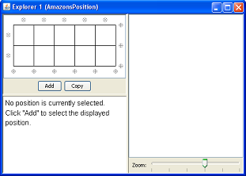
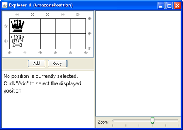
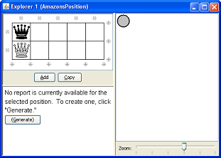
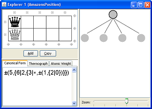

The explorer is a graphical position editor and game tree browser. You can use the explorer to construct positions in various games, as well as to display options and move sequences in a tree.
To start the explorer, click File/New/Explorer. This will bring up a list of supported games. For this tutorial, select "Amazons Position" and click OK. You should see something similar to the following (the actual display may vary depending on your operating system):

The window is divided into three segments. In the top-left is the position being edited - currently an empty 2x5 Amazons board. In the bottom-left is a panel that displays information about positions being analyzed. We haven't created any positions yet, so no information is displayed there. The panel to the right is used to display game trees.
To edit the Amazons position, simply click on any of the empty squares on the board. This will cause a stone to appear there. Clicking again on the stone changes it to a black Amazon, and so on, cycling through all available possibilities. Use this method to place a black Amazon in the top-left square of the board and a white Amazon in the bottom-left square, so that you see the following:

Now click on the "Copy" button. This copies a text representation of the displayed Amazons position to the clipboard. Click on the Worksheet and select Edit/Paste. This inserts the text representation directly into the worksheet. You should see the following text appear in the Worksheet:
Amazons("l....","r....")
You can use this technique to create positions graphically in the explorer and copy them to the Worksheet for analysis.
Click on the explorer again. The Amazons position should still be displayed. Now click on the "Add" button. This creates a node in the game tree panel and changes the displayed information to something like the following:

If the position's canonical form doesn't appear, you can click the "Generate" button to display it.
To start exploring the options for each player, right-click on the node (the grey circle in the rightmost panel of the explorer), and choose "Expand Sensible Options" from the menu that appears. This displays a minimal set of good moves for each player. More precisely, it displays a minimal set S of options of G with the property: If Left has a winning move in G + H (for any H), then the only options from G that he needs to consider are those in S, and likewise for Right.
You'll see four nodes appear (two for each player). You can click on them to display the associated positions. For example:

Notice that the canonical forms of the sensible options correspond to G's canonical options. (This will not always be the case, however: some of the sensible options might reverse out.)
While this makes it easy to explore the good moves for each player, there are some situations when you might want to explore other options as well - for example, to determine why they are dominated. You can achieve this by editing the position manually and clicking "Add". Combinatorial Game Suite will automatically search the tree for an appropriate place to attach the new position. For example, if you make any legal move (for either player) from the position above and click "Add", the new position will appear as an option. You can then continue to explore the new option just as any other. Note that there are two ways to edit a position: Click on the squares to cycle through the available possibilities (as discussed above), or simply drag existing pieces around the board with the mouse.
To shrink or enlarge the board, simply right-click on it and select Add/Remove Row/Column.
Another feature of the explorer is worth noting. Consider the following situation: We are given a game H and its canonical form G. We'd like to know where each option of G comes from. More precisely, we'd like to find, for each option GL (say) of G, a reversible sequence of moves H, HL, HLR, HLRL, ..., HLRLR...L, terminating in a position whose canonical form equals GL. (Note that there is not necessarily a direct option HL with canonical form GL, since the relevant HL might reverse out.) If you right-click on a node in the tree and select "Expand Sensible Lines of Play", CGSuite will expand exactly one such sequence for each option of G.
Finally, you can open an explorer based on an existing game directly from the
Worksheet by typing Edit(g) or Explore(g). For
example:
Edit(DomineeringRectangle(4,4))
1. Find the best moves from a 4x4 Domineering rectangle. Then find the "sensible lines of play," observing that one move for each player reverses out.
2. Find the sensible lines of play for the following 3x4 Clobber position:
LRLR
RLL.
LRL.
Then calculate its atomic weight. If you have the patience, find the
sensible lines of play for each of its sensible options, and observe that
Clobber is not an easy game!
3. Calculate the canonical form and atomic weight of the following 3x7
Clobber position, discovered by David Wolfe:
LLLLLLLIts canonical form is surprisingly complicated given that Right has just
one piece.
LRLLLLL
LLLLLLL
4. Load the Additional Games plug-in (you can find it by selecting "Plug-in Manager" from the Tools menu) and experiment with Samson de Jager's Cherry Tree editor.